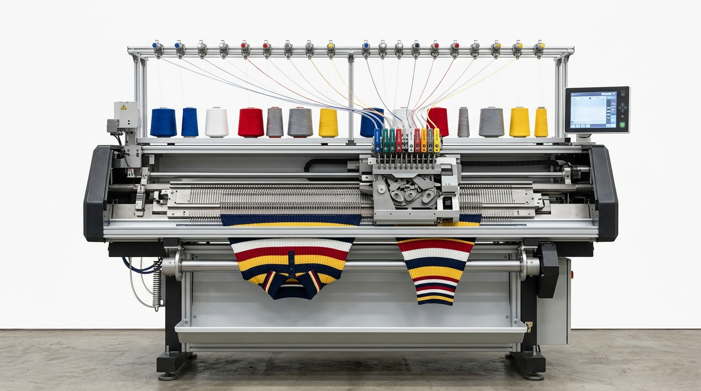
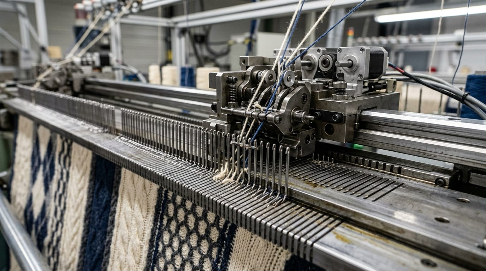

Designed for high-precision manufacturing of full-fashion sweaters, pullovers, cardigans, polo collars, cuffs, waistbands, shaped knit panels, and intricate Jacquard knitwear.

High-speed dual system flat machine for full-fashion sweater panels, cardigans, cables, pointelle lace, and multi-color Jacquard knits.

Specialized high-speed compact flat machine optimized for producing uniform T-shirt polo collars, sleeve cuffs, waistband ribs, and elasticized trims.

Advanced computerized flat knitting machine with motorized yarn feeders for seamless 3D shaping, multi-gauge blending, and complex Intarsia patterns.
Engineered to maximize knitwear production efficiency, reduce yarn waste, and maintain exceptional fabric dimensional stability.
High-resolution graphical color touchscreen interface with real-time piece counting, automatic error diagnostics, and instant USB CAD pattern transfer.
High-speed ceramic piezo actuators select every individual latch needle with zero missed stitches, supporting intricate cable, transfer, tuck, and pointelle patterns.
High-torque digital stepping motors adjust loop length line-by-line across 0-650 graduated levels, delivering anatomical shaping and uniform fabric weight.
Optical millisecond-response sensors immediately halt machine operation upon detecting yarn breakage, knotting, needle latch error, or fabric roll blockage.
From digital CAD pattern programming to synchronized carriage traversing and automated fabric take-down.
Garment geometry, stitch structures, multi-color Intarsia zones, and needle racking sequences are programmed digitally and loaded via USB or network cable.
Overhead yarn package cones supply thread through ceramic eyelets and electronic tensioners to up to 16 motorized yarn carriers traversing along guide rails.
The dual/triple cam carriage glides along hardened steel needle beds at speeds up to 1.6 m/s, precisely selecting needles to knit, tuck, miss, and transfer.
High-torque programmable main and auxiliary rollers draw completed sweater panels or collar pieces downward with uniform, calibrated stitch tension.
Standard industrial specifications for Mansha International's computerized flat knitting machine series.
Engineered for a broad spectrum of commercial knitwear, from heavy winter outerwear to fine-gauge fashion accessories.
Crewnecks, V-necks, turtlenecks, and raglan sweaters in cashmere, merino wool, acrylic, and blended yarns.
Buttoned cardigans, zippered knit jackets, chunky cable outerwear, and shawl-collar winter coats.
Anti-curl polo shirt collars, tipping stripe bands, bomber jacket ribs, sleeve cuffs, and waistband trims.
Full-fashion shaped front, back, and sleeve panels knitted to exact contours, eliminating cutting waste.
High-definition pictorial knitwear, color-block graphics, Aran cables, Pointelle lace, and Milano rib textures.
Seamless 3D Flyknit athletic shoe uppers, compression braces, and contoured ergonomic knit components.
Get authoritative answers on machine gauges, yarn compatibility, CAD pattern programming, daily output, and on-site support from our Ludhiana technical team.
Our flat knitting machines handle wool, cashmere, cotton, acrylic, viscose, alpaca, silk, polyester blends, and Lycra/Spandex elastic inlays. They also accommodate conductive technical threads and high-tenacity yarns for specialty knitwear.
For chunky and heavy-weight winter sweaters, 3G, 5G, and 7G gauges are ideal. For medium-weight and fine-gauge all-season sweaters, 12G and 14G are industry standards. For T-shirt polo collars, sleeve cuffs, and waistband ribs, 14G, 16G, and 18G provide tight, clean, non-curling edges.
Patterns are created using industry-standard CAD design systems (compatible with Stoll, Shima Seiki, and Raynen software) and transferred directly to the machine via USB flash drive or LAN network cable. We provide complete CAD software orientation and training for your design team.
With carriage speeds up to 1.6 m/s, production capacity depends on stitch complexity and gauge. A standard sweater front or back panel typically takes 18 to 35 minutes on our dual system machines. For polo collars, high-speed single system collar machines yield 80 to 120 completed collars per hour.
Yes. Mansha International provides on-site machine commissioning, mechanical installation, electrical tuning, and comprehensive operator training anywhere in India. We also maintain a ready inventory of genuine latch needles, sinkers, yarn carriers, and spare parts at our Ludhiana warehouse.
Tell us your required needle bed width, gauge (e.g., 7G, 12G, 14G), and production requirements for instant pricing.